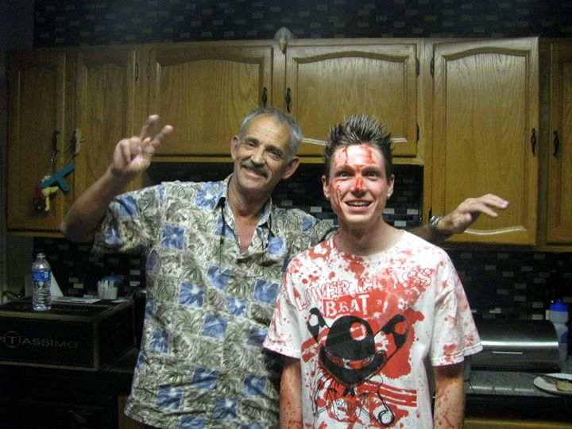
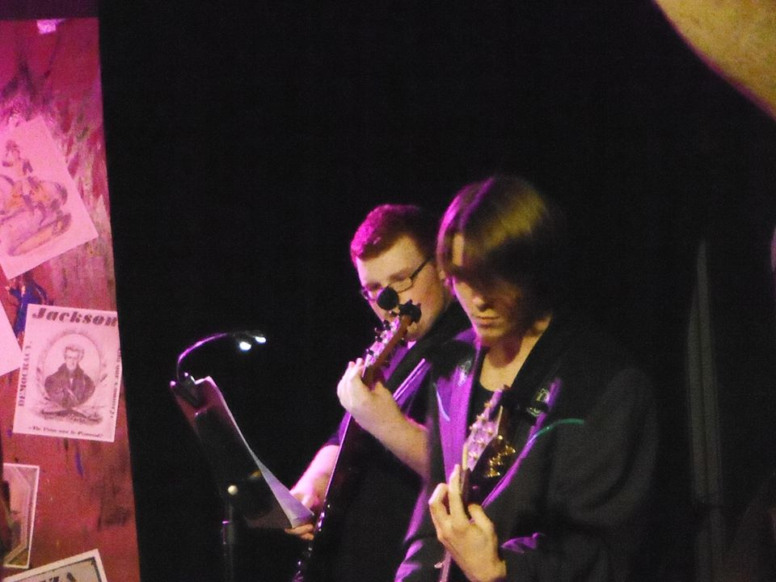
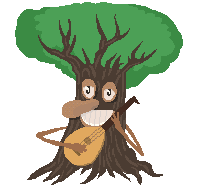

Image Gallery
Feel free to browse a small collection of my photos, art, and videos. Click a thumbnail to enlarge or play the content:
Chillin' in San Marcos, TX
Starred in and wrote music for Lucy Dang fashion promotional video
Getting home after playing guitar in Evil Dead: The Musical

Made the front Page TWU Gazzette (Must have been a slow news day!)
Playing Guitar in the Musical: Bloody Bloody Andrew Jackson

Obryn the Tree

Purplekush the Tree
>